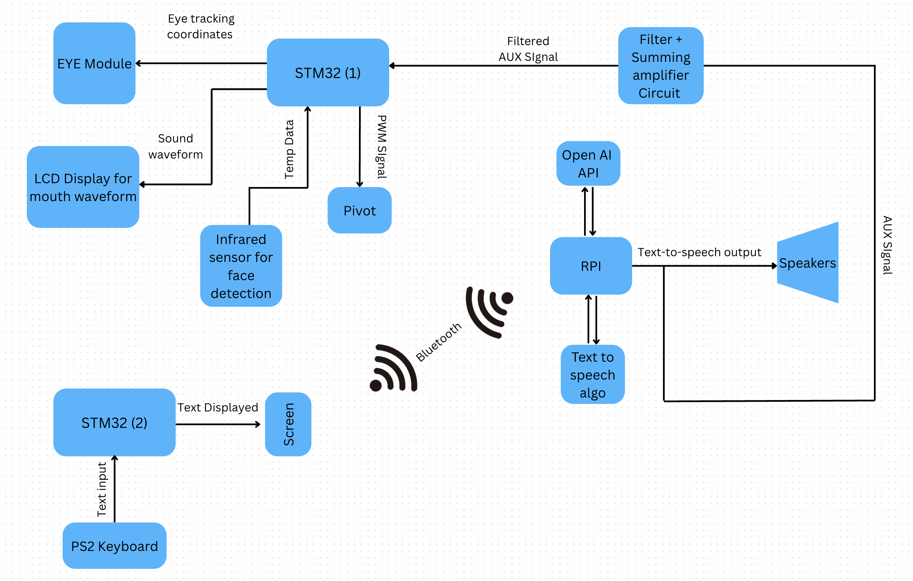
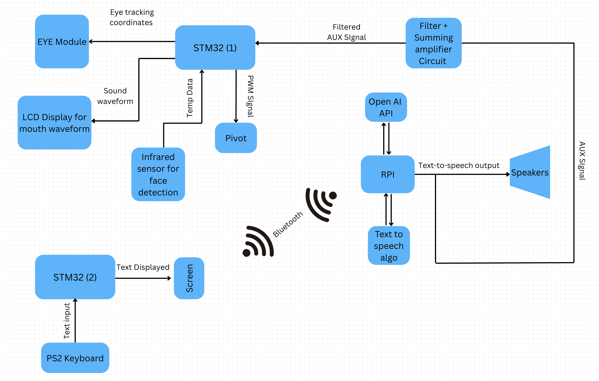

Projects
A selection of robotics, embedded systems, and digital design projects showcasing hands-on experience with microcontrollers, FPGAs, and real-time systems.
.jpg)
WHAT?
Built a real-time brain-controlled TV interface using EEG signals, enabling users to select on-screen commands through SSVEP responses and intentional eye blinks.
HOW?
- Collected SSVEP and blink EEG data through controlled recording sessions.
- Built CCA-based frequency classifiers and blink-detection models in Python.
- Developed the real-time signal pipeline (filtering, artifact removal, epoching).
- Integrated and tuned the ML modules on embedded hardware for stable, noise-resistant performance.
RESULTS
- Enabled robust real-time TV control using only SSVEP frequency selection and intentional blinks.
- Reduced false positives by over 95%, greatly improving reliability.
- Delivered stable, low-latency interaction with consistently accurate classification.
.jpg) 

What?
Built a talking robot (CHAT2-D2) that tracks a user, maintains eye contact, and converses via text-to-speech.
How?
- Captured keystrokes on an STM32 using a PS/2 keyboard and displayed them on a character LCD (bit-banging).
- Sent prompts over Bluetooth to a Raspberry Pi running OpenAI’s API and Google TTS.
- Used thermal-sensor data to pivot the head toward the user.
Results
- Seamless back-and-forth conversation with minimal input delay.
- Smooth, continuous user tracking and maintained eye contact.
- Reliable long-duration operation without intervention.
OBSTACLE AVOIDING ROBOT
Robotics · ArduinoWhat?
Built an Arduino-controlled obstacle-avoiding robot using sensors for autonomous navigation.
How?
- Programmed Arduino for obstacle detection and path adjustment.
- Calibrated and tested sensors for accurate readings.
- Applied debounce logic to minimize noise and false triggers.
- Optimized power management for stable long-term operation.
Results
- Achieved reliable obstacle avoidance with smooth navigation.
- Minimized false triggers for more accurate sensor performance.
- Maintained stable robot behavior with efficient power usage.
PLANT IRRIGATION SYSTEM
Embedded · IoTWhat?
Built an automated plant irrigation system using moisture sensors, a submersible pump, and a microcontroller for precise soil-based watering.
How?
- Integrated moisture sensors with an Arduino to monitor soil conditions.
- Programmed microcontroller logic to control pump activation based on real-time data.
Results
- Consistent hydration with minimal manual effort.
- Optimized water usage based on real-time soil moisture.
- Maintained healthy plant growth through precise irrigation control.
4-FUNCTION CALCULATOR ON FPGA
FPGA · VerilogWhat?
Built a four-function calculator (addition, subtraction, division, multiplication) on an Altera DE2-115 FPGA board.
How?
- Created a state diagram and implemented functionality in Verilog.
- Developed a user-friendly interface using onboard switches and 7-segment displays.
- Wrote test benches and debugged behavior using ModelSim.
Results
- Performed all four arithmetic functions with accurate outputs.
- Responsive user interface with real-time visual updates.
- Passed all test cases with reliable performance in simulation.